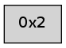

>> << IDX [start] -100 -25 -5 +0 +5 +25 +100 [140.028092146]
 Previous packets
----------------------------------------------------------------------
135.125971 beacon01(adaf) #0 coord=01,02 cycle=176.0ms assoc
-- color-indic=0 64 5f 66
135.135916 beacon02(adaf) #0 coord=01,02 cycle=176.0ms assoc 64 76 48
135.147489 [Hello(2): seq=276 sysInfo= stat=]
----------------------------------------------------------------------
135.322057 beacon01(adaf) #0 coord=01,02 cycle=176.0ms assoc
-- color-indic=0 64 66 6b
135.332000 beacon02(adaf) #0 coord=01,02 cycle=176.0ms assoc 64 4f 45
----------------------------------------------------------------------
135.518141 beacon01(adaf) #0 coord=01,02 cycle=176.0ms assoc
-- color-indic=0 64 c9 48
135.528085 beacon02(adaf) #0 coord=01,02 cycle=176.0ms assoc 64 e0 66
135.539666 [Hello(2): seq=277 sysInfo= stat=]
----------------------------------------------------------------------
135.714226 beacon01(adaf) #0 coord=01,02 cycle=176.0ms assoc
-- color-indic=0 64 f0 45
135.724170 beacon02(adaf) #0 coord=01,02 cycle=176.0ms assoc 64 d9 6b
----------------------------------------------------------------------
135.910311 beacon01(adaf) #0 coord=01,02 cycle=176.0ms assoc
-- color-indic=0 64 bb 52
135.920254 beacon02(adaf) #0 coord=01,02 cycle=176.0ms assoc 64 92 7c
135.931833 [Hello(2): seq=278 sysInfo= stat=]
----------------------------------------------------------------------
136.106395 beacon01(adaf) #0 coord=01,02 cycle=176.0ms assoc
-- color-indic=0 64 82 5f
136.116338 beacon02(adaf) #0 coord=01,02 cycle=176.0ms assoc 64 ab 71
----------------------------------------------------------------------
136.302479 beacon01(adaf) #0 coord=01,02 cycle=176.0ms assoc
-- color-indic=0 64 37 3f
136.312423 beacon02(adaf) #0 coord=01,02 cycle=176.0ms assoc 64 1e 11
136.323975 [Hello(2): seq=279 sysInfo= stat=]
----------------------------------------------------------------------
136.498565 beacon01(adaf) #0 coord=01,02 cycle=176.0ms assoc
-- color-indic=0 64 0e 32
136.508508 beacon02(adaf) #0 coord=01,02 cycle=176.0ms assoc 64 27 1c
----------------------------------------------------------------------
136.694650 beacon01(adaf) #0 coord=01,02 cycle=176.0ms assoc
-- color-indic=0 64 45 25
136.704593 beacon02(adaf) #0 coord=01,02 cycle=176.0ms assoc 64 6c 0b
136.716160 [Hello(2): seq=280 sysInfo= stat=]
----------------------------------------------------------------------
136.890734 beacon01(adaf) #0 coord=01,02 cycle=176.0ms assoc
-- color-indic=0 64 7c 28
136.900679 beacon02(adaf) #0 coord=01,02 cycle=176.0ms assoc 64 55 06
----------------------------------------------------------------------
137.086819 beacon01(adaf) #0 coord=01,02 cycle=176.0ms assoc
-- color-indic=0 64 d3 0b
137.096762 beacon02(adaf) #0 coord=01,02 cycle=176.0ms assoc 64 fa 25
137.108338 [Hello(2): seq=281 sysInfo= stat=]
----------------------------------------------------------------------
137.282903 beacon01(adaf) #0 coord=01,02 cycle=176.0ms assoc
-- color-indic=0 64 ea 06
137.292846 beacon02(adaf) #0 coord=01,02 cycle=176.0ms assoc 64 c3 28
----------------------------------------------------------------------
137.478988 beacon01(adaf) #0 coord=01,02 cycle=176.0ms assoc
-- color-indic=0 64 a1 11
137.488931 beacon02(adaf) #0 coord=01,02 cycle=176.0ms assoc 64 88 3f
137.500520 [Hello(2): seq=282 sysInfo= stat=]
----------------------------------------------------------------------
137.675074 beacon01(adaf) #0 coord=01,02 cycle=176.0ms assoc
-- color-indic=0 64 98 1c
137.685019 beacon02(adaf) #0 coord=01,02 cycle=176.0ms assoc 64 b1 32
----------------------------------------------------------------------
137.871159 beacon01(adaf) #0 coord=01,02 cycle=176.0ms assoc
-- color-indic=0 64 ff 56
137.881102 beacon02(adaf) #0 coord=01,02 cycle=176.0ms assoc 64 d6 78
137.892691 [Hello(2): seq=283 sysInfo= stat=]
----------------------------------------------------------------------
138.067244 beacon01(adaf) #0 coord=01,02 cycle=176.0ms assoc
-- color-indic=0 64 c6 5b
138.077188 beacon02(adaf) #0 coord=01,02 cycle=176.0ms assoc 64 ef 75
----------------------------------------------------------------------
138.263328 beacon01(adaf) #0 coord=01,02 cycle=176.0ms assoc
-- color-indic=0 64 8d 4c
138.273271 beacon02(adaf) #0 coord=01,02 cycle=176.0ms assoc 64 a4 62
138.284858 [Hello(2): seq=284 sysInfo= stat=]
----------------------------------------------------------------------
138.459414 beacon01(adaf) #0 coord=01,02 cycle=176.0ms assoc
-- color-indic=0 64 b4 41
138.469357 beacon02(adaf) #0 coord=01,02 cycle=176.0ms assoc 64 9d 6f
----------------------------------------------------------------------
138.655498 beacon01(adaf) #0 coord=01,02 cycle=176.0ms assoc
-- color-indic=0 64 1b 62
138.665442 beacon02(adaf) #0 coord=01,02 cycle=176.0ms assoc 64 32 4c
138.677023 [Hello(2): seq=285 sysInfo= stat=]
----------------------------------------------------------------------
138.851583 beacon01(adaf) #0 coord=01,02 cycle=176.0ms assoc
-- color-indic=0 64 22 6f
138.861527 beacon02(adaf) #0 coord=01,02 cycle=176.0ms assoc 64 0b 41
----------------------------------------------------------------------
139.047667 beacon01(adaf) #0 coord=01,02 cycle=176.0ms assoc
-- color-indic=0 64 69 78
139.057611 beacon02(adaf) #0 coord=01,02 cycle=176.0ms assoc 64 40 56
139.069179 [Hello(2): seq=286 sysInfo= stat=]
----------------------------------------------------------------------
139.243753 beacon01(adaf) #0 coord=01,02 cycle=176.0ms assoc
-- color-indic=0 64 50 75
139.253696 beacon02(adaf) #0 coord=01,02 cycle=176.0ms assoc 64 79 5b
----------------------------------------------------------------------
139.439838 beacon01(adaf) #0 coord=01,02 cycle=176.0ms assoc
-- color-indic=0 64 a7 ec
139.449781 beacon02(adaf) #0 coord=01,02 cycle=176.0ms assoc 64 8e c2
139.461354 [Hello(2): seq=287 sysInfo= stat=]
----------------------------------------------------------------------
139.635922 beacon01(adaf) #0 coord=01,02 cycle=176.0ms assoc
-- color-indic=0 64 9e e1
139.645869 beacon02(adaf) #0 coord=01,02 cycle=176.0ms assoc 64 b7 cf
----------------------------------------------------------------------
139.832008 beacon01(adaf) #0 coord=01,02 cycle=176.0ms assoc
-- color-indic=0 64 d5 f6
139.841952 beacon02(adaf) #0 coord=01,02 cycle=176.0ms assoc 64 fc d8
139.853543 [Hello(2): seq=288 sysInfo= stat=]